Ankita Samaddar
Cybersecurity | AI | Cyber-Physical Systems | Networks
Cybersecurity | AI | Cyber-Physical Systems | Networks
Designing RL-based neurosymbolic autonomous cyber agents for enterprise networks aims to combine the adaptability of machine learning with the reliability and interpretability of symbolic reasoning. Enterprise networks are complex, dynamic environments containing heterogeneous devices, services, and security policies. Traditional rule-based cyber defense systems struggle to adapt to evolving threats, while purely data-driven reinforcement learning (RL) approaches often lack transparency, safety guarantees, and policy control. A neurosymbolic framework addresses these challenges by integrating RL-driven decision making with symbolic representations of network knowledge, security policies, and operational constraints.
We use Behavior Trees as neurosymbolic cyber agents. Behavior trees are interpretable, reactive, and modular agents with learning-enabled components. We develop an approach to design autonomous cyber defense agents using behavior trees wit learning-enabled components. We evaluate the proposed approach in an autonomous cyber environment, the CybORG CAGE Challenge 2. We develop a software architecture and evaluate the effectiveness of the agents under different network defense scenarios, e.g., adaptive cyber-attacks.


Nicholas Potteiger, Ankita Samaddar, Hunter Bergstrom and Xenofon Koutsoukos, "Designing Robust Cyber-Defense Agents with Evolving Behavior Trees", IEEE International Conference on Assured Autonomy (ICAA), 2024 Paper.
Autonomous cyber agents use modern defense techniques by adopting intelligent agents with conventional and learning-enabled components. These intelligent agents are trained via reinforcement learning (RL) algorithms and can learn, adapt to, rason about and deploy security rules to defens networked computer systems while maintaining critical operational workflows. However, the knowledge available during training about the state of the operational networks and environment may be limited. The agents should be trustworthy so that they can reliably detect situations they cannot handle, and hand them over to cyber experts.
We develop an out-of-distribution (OOD) Monitoring algorithm that uses Probabilistic Neural Network (PNN) to detect anomalous or OOD situations of RL-based agent witht discrete states and discrete actions. We demonstrate the effectiveness of our approach by integrating our approach into a behavior tree with learning enabled components and evaluate the efficacy of our approach in a simualted cyber environment under different adversarial strategies.


Ankita Samaddar, Nicholas Potteiger, Xenofon Koutsoukos, "Out-of-Distribution Detection for Neurosymbolic Autonomous Cyber Agents", International Conference on AI and Cybersecurity (ICAIC), 2025 (Best Paper Award) Paper Slides . Code .
Most vehicular applications in Electric Vehhicles use IEEE 802.11p protocol for vehicular communications. Vehicle Rebalancing appliction is one such application that as many car rental service providers to overcome the disparity between vehicle demand and vehicle supply at different charging stations. Vehicle Rebalancing application uses GPS location data of vehicles periodically to determine the vehicle(s) to be moved to a different charging station for rebalancing. However, a malicious attacker residing in the network can spoof GPS location data packets of the target vehicle(s) resulting in misinterpretation of the location of the vehicle(s) resulting in wrong rebalancing decision due to unmet demands of the customers and under utilization of the system. To detect and prevent this attack, we propose a location tracking technique that can validate the current location of a vehicle based on its previous location and roadmaps. We use OpenStreetMap and SUMO simulator to generate the roadmap data of Singapore and evaluate the efficiency of our proposed approach on the generated roadmap data.
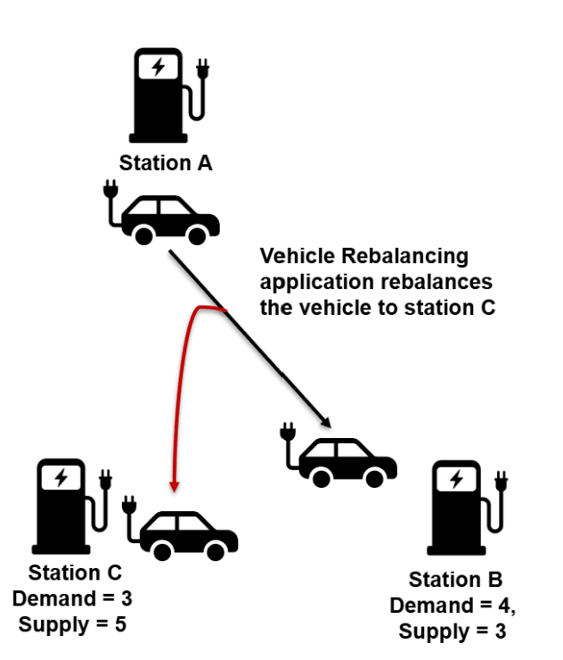
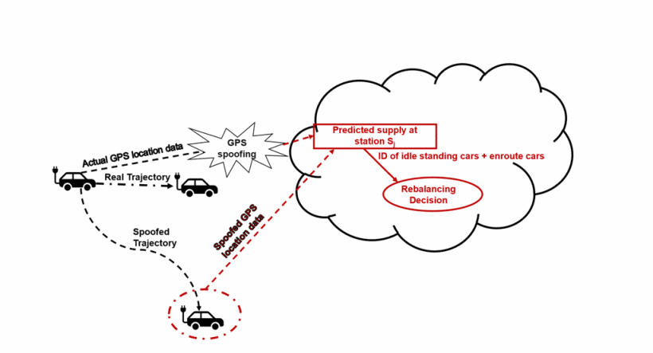
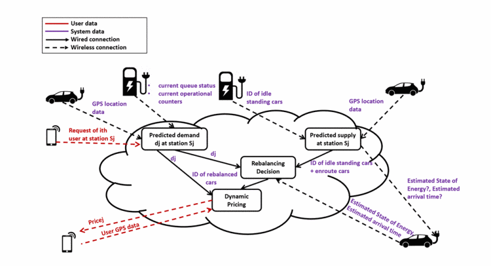
Ankita Samaddar, Arvind Easwaran, "A Location Validation Technique to Mitigate GPS Spoofing Attacks in IEEE 802.11p based Fleet Operator's Network of Electric Vehicles", IEEE International Conference on Intelligent Transportation Systems (ITSC), 2024 Paper Slides. Code .
Industrial Control Systems (ICSs) are real-time cyber-physical systems consisting of several closed-loop controls. Large-scale wireless sensor actuator networks form the main communication framework among the network devices in ICSs. Most of the communications in ICSs are periodic real-time flows with hard deadlines. To ensure reliability, the communications in these networks are time-division multiple access (TDMA) based. Dedicated network resources (time-slots and frequencies) are pre-allocated to these devices and the communication schedule is pre-computed to satisfy the hard deadlines of the real-time flows. The same schedule is repeated over time which makes the schedule predictable in nature. However, a malicious attacker can exploit the predictability in the time-slots of the schedule to launch timing attacks. Since these applications are time-critical, timing attacks can completely undermine the system performance leading to unsafe states.
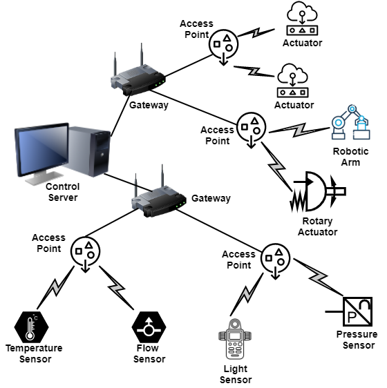
Schedule Randomization in WirelessHART Networks: Among the existing wireless network protocols that are in use, the WirelessHART is the most suitable and widely adopted protocol in ICS. A WirelessHART protocol supports centralized architecture, TDMA based communication, multiple channels, etc., to guarantee reliable predictable communications with real-time flow guarantees in ICSs. However, the predictable communication exposes the system to stealthy side-channel attacks such as timing attacks, selective jamming attacks, etc. As a countermeasure against these attacks in WirelessHART networks, we propose a centralized schedule randomization technique, the SlotSwapper, that randomizes the time-slots and channels in the schedule over every hyperperiod without violating the hard deadlines of the real-time flows, while still satisfying the feasibility constraints of a schedule in a WirelessHART network.
We evaluate our proposed approach on a 70 node WSN testbed, the Indriya testbed in NUS as well as on the Cooja simulator.
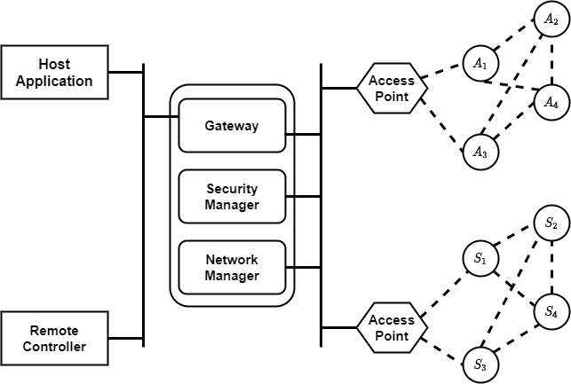
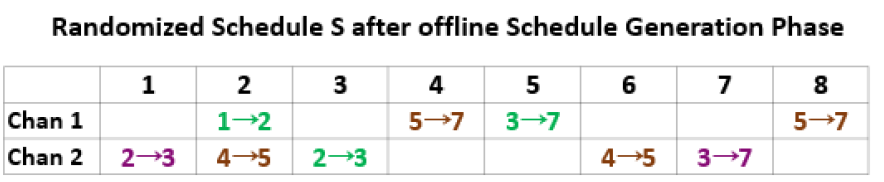
Ankita Samaddar, Arvind Easwaran and Rui Tan, "A Schedule Randomization Policy to Mitigate Timing Attacks in WirelessHART Networks", Springer Real-Time Systems, Volume 56, Pages 452-489, October 2020
Paper.
Code .
Ankita Samaddar, Arvind Easwaran and Rui Tan, "SlotSwapper: A Schedule Randomization protocol for Real-Time WirelessHART Networks", Real-Time Networks (RTN), 2019
Paper.
Ankita Samaddar, Arvind Easwaran and Rui Tan, "Work Already Published: A Schedule Randomization Policy to Mitigate Timing Attacks in WirelessHART Networks", Brief-Presentations Session of IEEE Real-Time and Embedded Technology
and Applications Symposium (RTAS), 2021
Poster.
The centralized schedule randomization technique generates the randomized schedules offline and distributes the schedules online. Hence, they cannot support any change in topology in the network. Further, this technique has energy overheads in distributing the schedules to all the network devices at runtime. Hence, we propose a distributed online schedule randomization technique, the DistSlotShuffler, that can generate random feasible schedules at runtime in each network device without affecting the closed-loop control stability. To increase the extent of randomization of time-slots in the schedules, this online distributed technique adopts a period adaptation strategy that can adjust the transmission periods of the real-time flows at runtime depending on the stability of the closed-loop controls.
We evaluate our proposed approach on the GISOO simulator with the WSN network modelled in Cooja, and the controller and the physical plant modelled in Simulink.
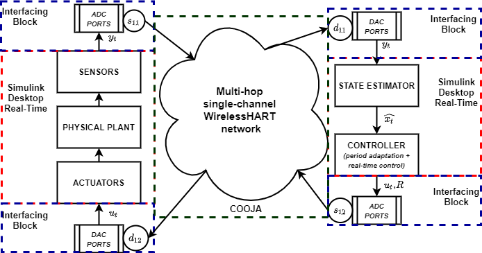
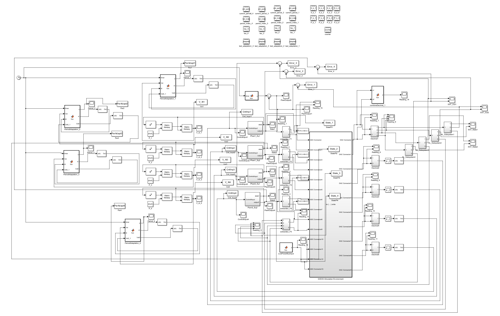
Ankita Samaddar, Arvind Easwaran, "Online Distributed Schedule Randomization with Period Adaptation to Mitigate Timing Attacks in Industrial Control Systems", ACM Transactions on Embedded Computing Systems (TECS), Volume 22, Issue 6, Pages 1-39, November 2023 (ACM Digital Library) Paper. Code .
Schedule Randomization in 5G Networks: 5G cellular networks are expected to serve as the main communication standard in the future wireless sensor networks. Among the different service categories supported by 5G, the ultra-reliable low-latency communication (URLLC) is mostly suitable for time-critical applications, e.g., the ICSs. The communication in 5G is organized into slots over multiple frequencies. To satisfy the hard deadlines of the URLLC flows in ICS, a part of the resources (slots and frequencies) in 5G are reserved for URLLC traffic and the same schedule is repeated over time. The repetition of the same schedule over time makes the slots in the schedules predictable which makes 5G networks vulnerable to timing attacks. However, the existing schedule randomization techniques are not applicable for dynamic networks like 5G where the number of URLLC flows and the amount of available network resources for URLLC flows vary at runtime. Moreover, the feasibility of the real-time flows need to be guaranteed at runtime. Hence, we propose an online schedule randomization technique that randomizes the slots and the frequencies of the periodic URLLC flows while guarenteeing the feasibility of the flows at runtime.
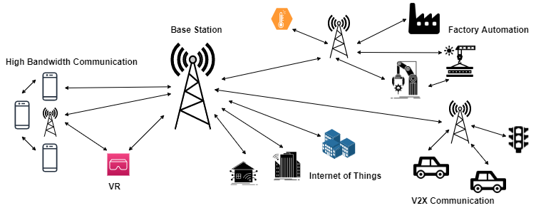
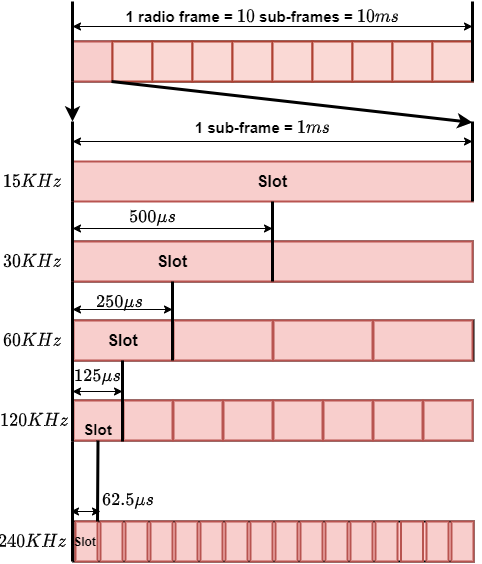
Ankita Samaddar, Arvind Easwaran, "Online Schedule Randomization to Mitigate Timing Attacks in 5G Periodic URLLC Communications", ACM Transactions on Sensor Networks (TOSN), Volume 19, Issue 4, Pages 1-26, July 2023 Paper. Code .
Medical cyber-physical systems consists of multiple medical devices that co-ordinate with each other to provide closed-loop control to the patients. However, one of the major challenges for such systems is to guarantee their safety in presence of significant physiological variabilities among the patients. Most formal verification methods often fall short to verify these system in terms of scalability due to non-linearity in the physiological models and large variations in the model parameters due to intra and inter patient variabilities. We consider a case-study system of pre-operative and intra-operative care for diabetic patients based on a well-established insulin-infusion protocol. The system comprises a physiological model of the glucose-insulin regulatory system based on Dallaman's model integrated with a proportional-derivative controller that encodes the insulin-infusion protocol. To verify the scalability problem, we present a solution for this case-study based on well-known model linearization techniques. We calculated the error in linearization and incorporated the error into the linearized model. We consructed oth the hybrid system model and the corresponding linearized model using dReach and SAL verification tools respectively. Experiments illustrates that the non-linear model remainied non-verifiable after a certain depth whereas the linearized model remained fully verifiable at 2x times faster than the non-linear model with some approximation.
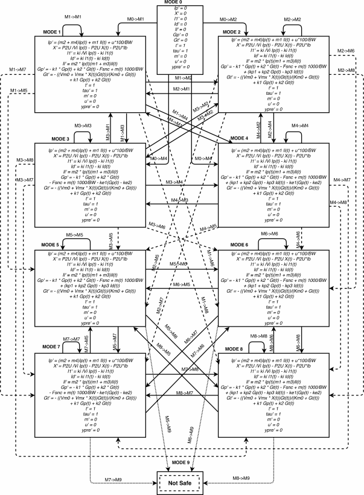
Ankita Samaddar, Zahra Rahiminasab, Arvind Easwaran, Ansuman Banerjee and Xue Bai, "Linearization based Safety Verification of a Glucose Control Protocol", IEEE International Symposium on Real-Time Computing (ISORC), 2019 Paper.
Email: anki.samaddar@gmail.com